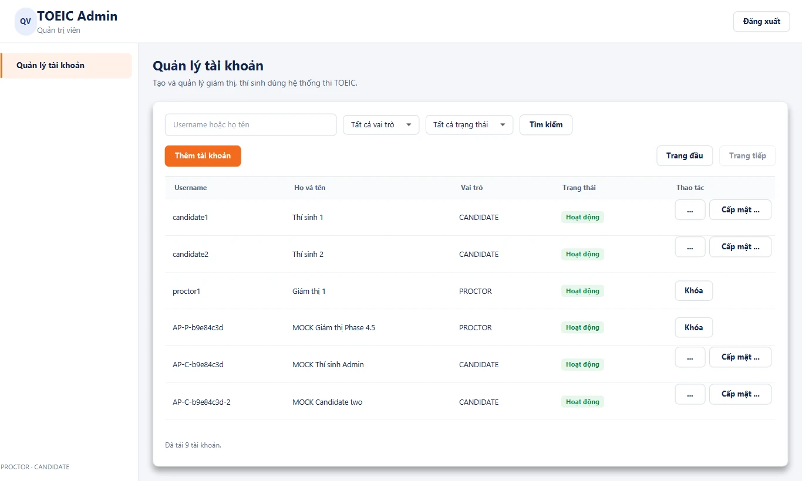

TOEIC
Monitor
Thi TOEIC Client–Server và giám sát máy thí sinh theo thời gian thực — quan sát, không phán xét.
Một phòng thi máy tính cần ba điều cùng lúc
Bài làm không mất
Mạng chập chờn, app bị đóng, hai cửa sổ cùng ghi một lượt thi — đáp án đã báo “đã lưu” phải thật sự nằm trong DB.
Giờ do Server quyết
Deadline chung cho cả phòng, không tin đồng hồ máy thí sinh. Phần Listening chỉ phát một lần, không tua, không phát bù.
Giám thị nhìn thấy
Process, USB, focus, cửa sổ trên máy thí sinh hiện gần thời gian thực — là sự kiện “quan sát thấy”, không phải kết luận gian lận.
REST cho dữ liệu, WebSocket cho thời gian thực
Desktop app
Đăng nhập, đề, audio & ảnh có xác thực, lưu đáp án, nộp bài, đọc trạng thái, timeline.
Heartbeat, snapshot & event giám sát, lệnh phát Listening, cảnh báo tới giám thị.
Một ứng dụng, chia module
Một phòng thi, từ PIN đến nộp bài
Start trùng ID không phát lại. Reconnect không reset deadline.
Một khóa, một đồng hồ, ACK sau COMMIT
Khóa bản ghi attempt — save, submit, timeout, takeover dùng chung
Kiểm writerEpoch sau khóa — cửa sổ cũ bị takeover → STALE
Đọc clock_timestamp() một lần — không dùng now() của đầu transaction
So revision: thấp hơn → STALE; bằng nhau mà nội dung khác (dạng chuẩn hóa) → CONFLICT
COMMIT rồi mới ACK — rollback không bao giờ báo “đã lưu”
Từ ProcessHandle tới màn hình giám thị
Poll
ProcessHandle mỗi 1 000 ms, ngoài luồng JavaFX
Lọc 9 tên
Không đọc tham số, không đóng process
Định danh
(collectorSessionId, pid, startInstant)
Gửi
FULL làm mới 2 s · event có eventId ổn định qua retry
Hai luồng
State: reducer trong RAM · History: commit DB rồi ACK
Heartbeat 2 s · timeout 6 s
Mất heartbeat → UNKNOWN. Đó là mất liên lạc, không phải bằng chứng gian lận.
Một lần xuất hiện = một event
Không lặp event ở mỗi poll. Collector chỉ chạy ở role thí sinh.
Poll nhanh bắt được nhiều hơn, nhưng tốn CPU hơn
process con có kiểm soát: 273 thấy · 84 sót · 3 chưa kết luận
12 lượt (4 chu kỳ × 3), seed 1234 · Intel Core Ultra 5 125H, Windows 11 · ProcessHandle thật, client giả lập, không qua mạng
Bộ hồi quy đầy đủ: không lỗi nào còn mở
PASS 0 FAIL · 316 SKIP — main mới nhất, mvn test 7 module, server trên PostgreSQL thật; GUI/tùy chọn bị bỏ qua
PASS 0 FAIL · 23 SKIP — bản phát hành 5173462, gồm GUI JavaFX thật; + 22 windows-observer
PASS E2E ACCOUNT_PIN: Admin → Giám thị → 2 thí sinh → START → nộp
Lỗi tìm ra khi review cuối
Sau SUBMIT/TIMEOUT, kênh tín hiệu vẫn chạy. Dưới tải CPU: code cũ 3/6 FAIL, bản sửa 6/6 PASS.
Chưa kiểm — ghi đúng là chưa
LAN hai máy vật lý · người nghe audio thật · cắm/rút USB vật lý trên commit tích hợp: NOT TESTED.
Năm bước thử nhanh
Tạo Giám thị, Thí sinh; import đề JSON hoặc soạn tay đủ 200 câu
“+ Tạo phòng” → chọn đề → đọc PIN cho thí sinh
Nhập PIN → tải âm thanh, thử loa, xác nhận → hàng chuyển “Sẵn sàng”
Bắt đầu phòng thi → Listening phát, chân trang “✓ Đã lưu” → Nộp bài
Mở Chrome/Zalo, rời cửa sổ, cắm/rút USB → cảnh báo hiện bên Giám thị

Những gì còn chưa làm được
- Thi đầy đủ qua Internet / LAN hai máy vật lý chưa chạy xong
- Chưa có người nghe audio thật qua loa/tai nghe
- Polling bỏ sót process sống ngắn hơn chu kỳ
- Restart Server mất trạng thái hiện tại (lịch sử vẫn giữ)
- Bộ cài MSI chưa ký số; delta chưa qua gate nên tắt
- Chạy checklist hai máy khác mạng đã soạn sẵn
- Đo byte thật của full và delta (E2) trước khi bật delta
- Đánh giá nguồn sự kiện OS thay cho polling (cần review riêng)
- Ký số bộ cài, nghiệm thu âm thanh với người thật
Cảm ơn
thầy cô
& các bạn
Mã nguồn, tài liệu và bằng chứng
github.com/AnhTaizz/Toeic-Monitoring-Realtime